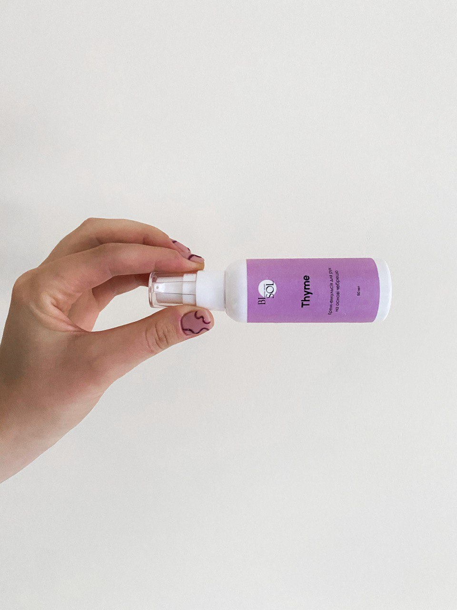
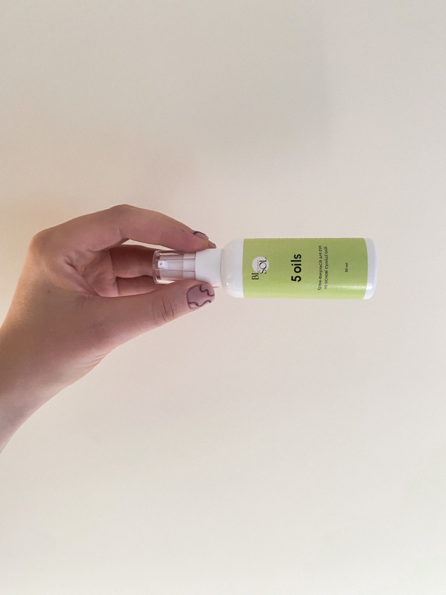
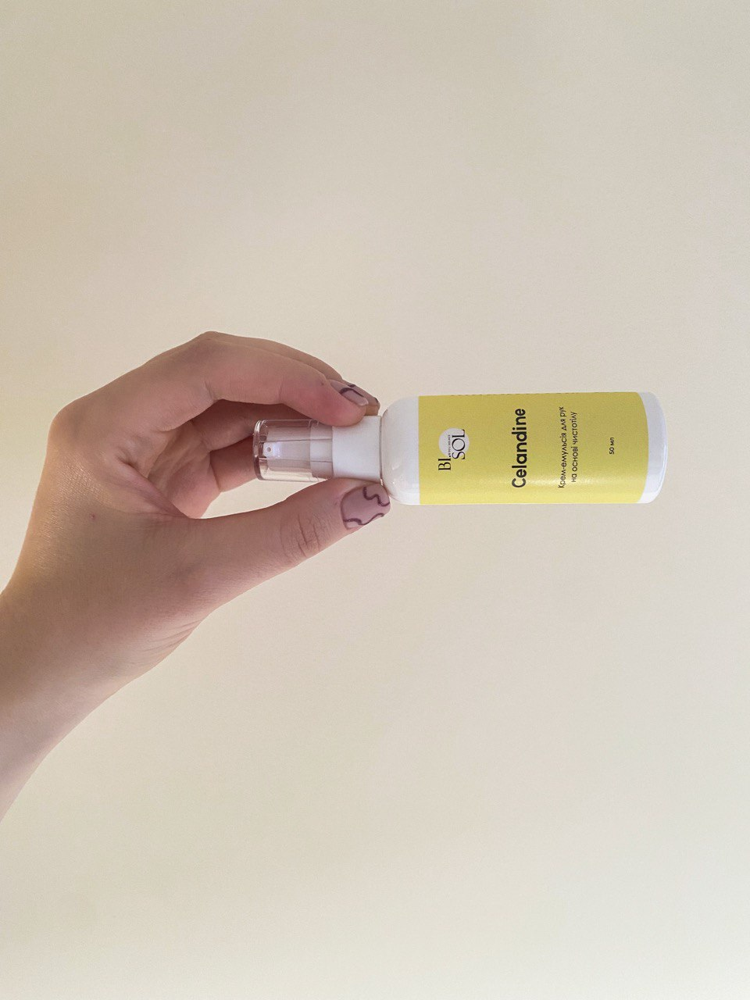

КОСМЕТИКА | ДОГЛЯД
Український бренд сертифікованої продукції на натуральній основі
Bijou Solace «маленька втіха»
Раді представити вам супер круту лінійку крем-емульсій для рук та тіла Bijou Solace. Ми поки невідомий бренд Bijou Solace, що в перекладі означає «маленька втіха». Наші технологи створили надзвичайно дієві крем-емульсії для вашого тіла. Особливістю кремів Bi.Sol є виготовлення їх на натуральній основі. Ми старались створити максимально корисний продукт для вашої шкіри i ми це зробили. Тому, обираючи крем-емульсію від Bijou Solace, Ви гарантовано отримаєте якісний продукт.
Відмінність емульсії від крему
Емульсія має легку текстуру, швидко впитується, та не залишає жирної плівки. Заспокоює подразнену шкіру, запобігає втраті вологи, відновлює пошкоджені клітини. До складу входить лецитин, вітаміни A, D, E, сечовина, гліцерин. A неймовірний аромат це просто в саме серденько, ваші ручки після використання емульсії побувають наче на спа - процедурі.
115 грн / 50 ml
Олійний екстракт чебрецю відновлює правильний обмін речовин, змінає запалення, тонізує шкіру, а також робить її пружною та еластичною.Також чебрець володіє бактерицидною дією.
125 грн / 50 ml
Поєднання екстрактів П‘ЯТИ олій - обліпихи, гарбуза, льону, оливок та виноградних кісточок.
115 грн / 50 ml
Лікувальна користь чистотілу обумовлена наявністю в її складі алкалоїдів, ефірних масел і органічних кислот.